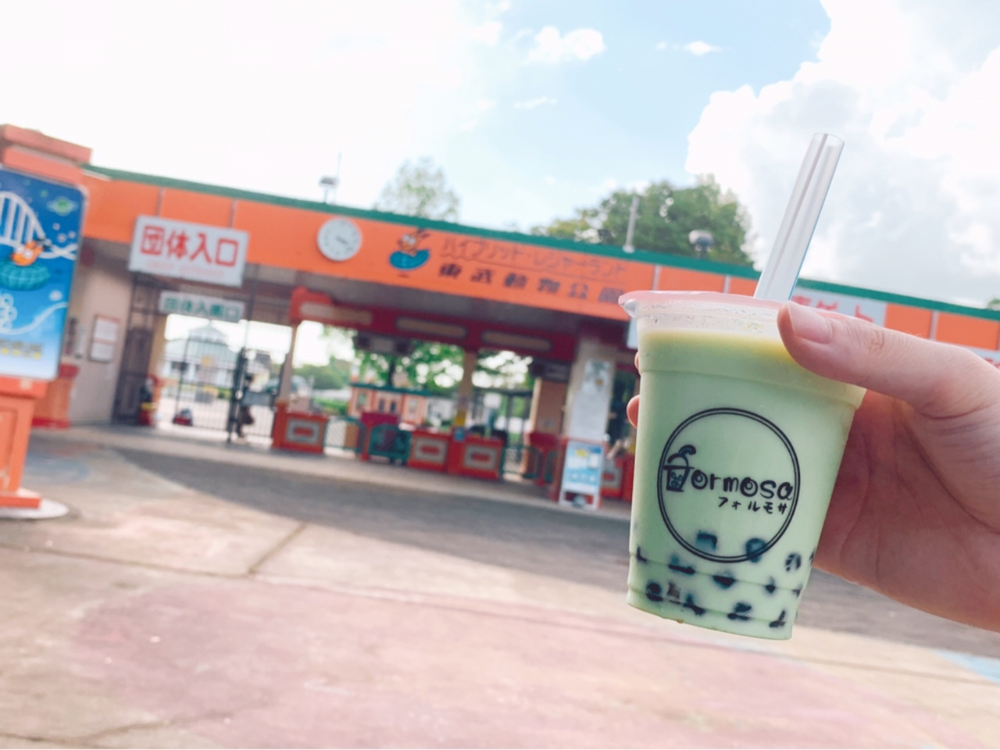

宮代
フォルモサ
-Formosa-
ABOUT
当日作り立ての生タピオカを使ったドリンクを専門に、本格的な台湾料理が楽しめるお店。
不定期で台湾タレントによるコンサートイベントが開催されることも。
台湾産の茶葉や、宮代町の農家が栽培した紫ニンジンのジュースなども店内で販売されています。
COMMENT

LOCATION
| 🏣 住所 | 埼玉県南埼玉郡宮代町中央3-11-16 |
|---|---|
| 🚃 アクセス | 東武動物公園駅西口より徒歩1分 |
| 📞 電話番号 | 048-053-7373 |
| ⏰ 営業時間 | 11:30～20:00 |
| ㊡ 定休日 | 月曜日 |
タピオカ一粒一粒が大きくて、食べごたえがあります。ミルクベースのドリンクでは、ミルクが濃厚でとても美味しく、まったく飽きを感じさせません。
店内は落ち着いた雰囲気が印象的で、居心地が良いです。台湾音楽のBGMもリラックスさせてくれます。
お店の近くには、動物園と遊園地が融合したレジャーランドの東武動物公園があります。動物公園で思いっきり遊んだ後は、お友達やご家族と一緒にフォルモサに立ち寄ってみてはいかが？